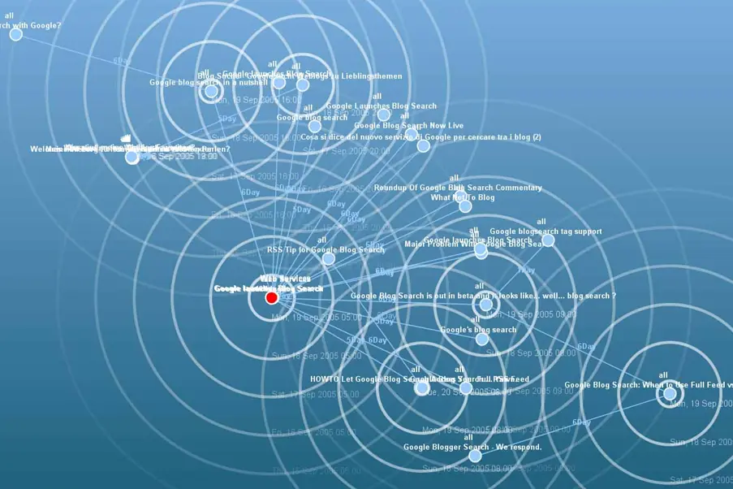
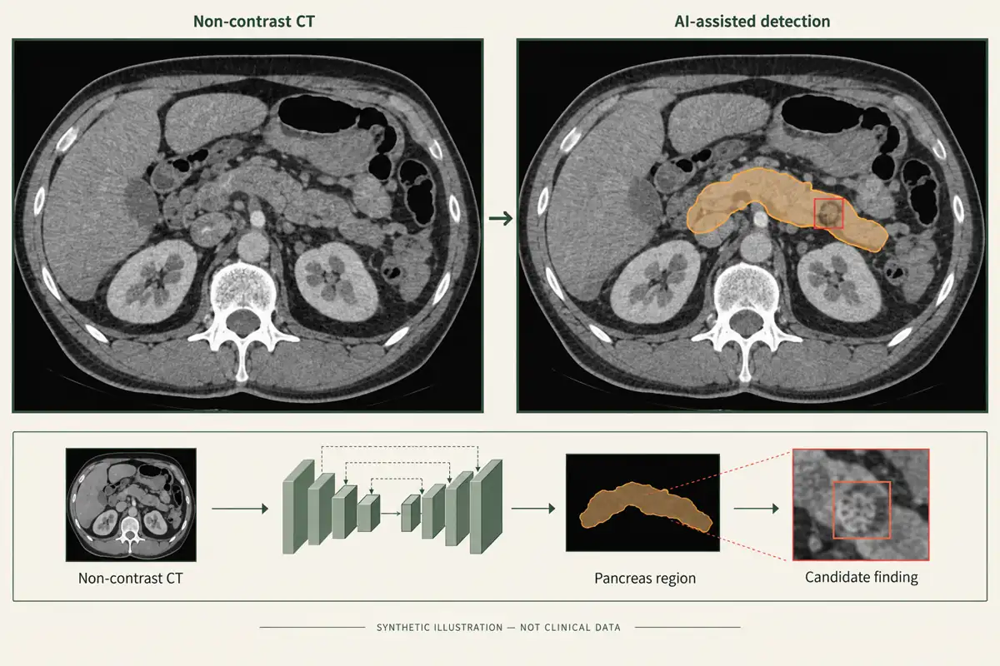
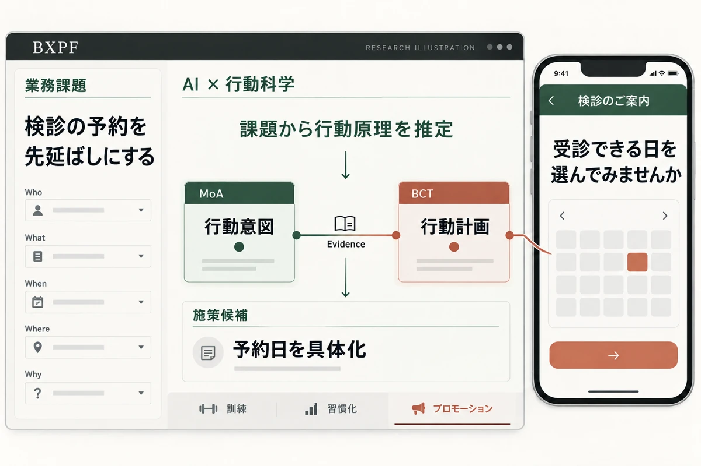
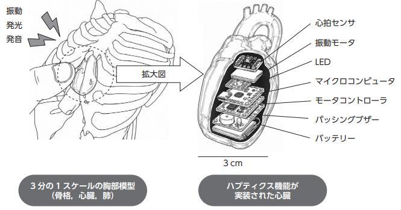
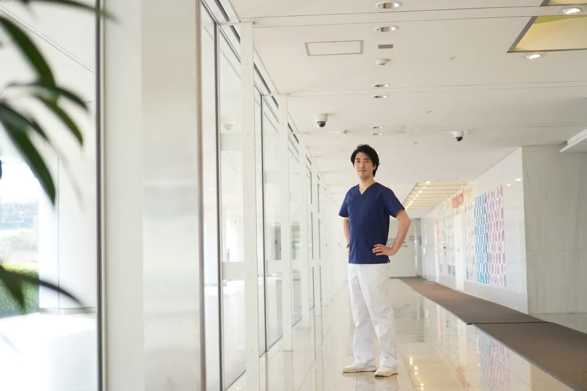

インタラクティブ・プログラミング研究室
01 / HCI
複雑な情報を、
人に届く表現へ。
Ripple Presentationでは、ブログの話題が伝わる過程を時間とリンク構造から可視化。GitHubでは、VisualDataなど、産業構造や経済動向の変化を「動くグラフ」で伝える作品を公開しています。
VisualDataを体験 ↗WHY MEDICINE
だから私は、自分の身体を自分ごととして理解し、行動につながる体験を研究しています。HCI、Computer Vision、Digital Health。三つの専門性を融合して、この課題に取り組んでいます。

01 / HCI
Ripple Presentationでは、ブログの話題が伝わる過程を時間とリンク構造から可視化。GitHubでは、VisualDataなど、産業構造や経済動向の変化を「動くグラフ」で伝える作品を公開しています。
VisualDataを体験 ↗
02 / CV × Digital Health
比較読影で同じ病変を見比べられるよう、画像位置合わせ技術を開発・実用化し、筆頭著者として報告しました。そこから病変の自動検出を目指し、プレシジョンヘルスの研究をリード。検診CTでの膵臓がん検出支援や、造影MRIでの転移性肝腫瘍などの検出支援に取り組みました。
医療画像に加え、電子カルテの診療記録と数値データを統合する疾患早期予測AIにも共著として参画。昭和大学附属4病院の臨床データを用いた研究成果をAMIAで発表しています。
プレシジョンヘルス紹介動画 ↗
03 / Digital Health × HCI
行動変容支援プラットフォームのBXPFでは、業務課題からAIが行動原理（MoA）を推定し、研究知見に基づく介入技法（BCT）と対応付けます。訓練・習慣化・検診案内など、用途と個人特性に合った働きかけへ展開しています。
BXPFの共著公開記事 ↗CURRENT RESEARCH / 筑波大学 博士研究
臓器の可触化
医用画像から自分の臓器を模型にし、心拍と同期する振動・音・光を重ねる。HCI、Computer Vision、Digital Healthを融合し、自分の身体に触れる体験をつくる博士研究です。
その体験が、身体の記憶や健康意識、検診などの行動にどうつながるかを探究しています。
プロトタイプの公開映像 ↗ 書籍『コンバージングテクノロジー』／臓器の可触化コラム（2026年） ↗
PUBLICATIONS / SELECTED WORKS
筆頭著者の研究論文・学術誌解説、近年の共著論文に加え、書籍コラムと座談会への寄稿・参加を区別して掲載しています。
映像情報メディア学会誌 74(6)
THE LUNG perspectives 27(3), pp.35–38
情報処理学会 デジタルプラクティス 8(2)
PSIVT 2015, pp.512–525
IEEE International Symposium on Multimedia (ISM 2011), pp.357–362
人工知能学会 第25回全国大会, 2B1-OS13-4
KICSS 2006 · Best Student Paper
APVIS 2006, pp.153–160
インタラクション2006, pp.109–116
BCSS 2026, pp.70–77
Japanese Journal of Radiology 44, pp.116–125 · 2025年オンライン公開
Frontiers in Psychology
IEEE WCNC 2026
ACM UbiComp Companion 2025, pp.1190–1195
DICOMO 2025, pp.1534–1540
人工知能学会 SLUD 第105回, pp.80–85
情報処理学会 研究報告高齢社会デザイン（ASD）, 2025-ASD-33 (44), pp.1–7 · 査読なし
IEEE VTC2025-Spring
IEEE CEC 2024
AMIA Annual Symposium Proceedings 2024, pp.885–893（2025年刊行）
岡彩香氏らとの共著。昭和大学附属4病院の電子カルテから診療記録と数値情報を統合し、疾患を早期予測。Precision@10：67.0%。
インタラクション2024, pp.714–717
電子情報通信学会技術研究報告 MVE2023-45, pp.19–24
情報処理学会 第85回全国大会 6C-06
情報処理学会 第85回全国大会 6C-04
『コンバージングテクノロジー：心理・身体・社会をつなぐAI時代の人間理解』コラム7 · 誠信書房
個人の臓器の可触化とデジタルツインを通じた身体理解を紹介。出版社の公開目次に石原正樹の氏名が掲載されています。
出版社公式の目次・コラム執筆者情報 ↗※ 筆頭著者欄には原著・国内外学会発表・解説記事を含みます。座談会は別枠で掲載。近年の共著は2021～2026年を対象に調査し、著者名・発表先を確認できた2023～2026年の成果を掲載。査読付き論文、研究会技術報告、国内大会発表を含みます。表題は正式な書誌表記です。

ABOUT
Masaki Ishihara
情報に、手触りを。
技術に命の使命を。
医療に役立つ画像解析や、人の理解と行動を支える技術を研究しています。
ENGLISH SUMMARY
I am Masaki Ishihara. Early-detection AI cannot help people who do not attend screening. I combine medical imaging, human–computer interaction, and behavioral science to study experiences that make one’s own body personally meaningful and may support action. My work spans image registration for clinical use, cancer detection support, and evidence-based intervention design. At the University of Tsukuba, I study Haptic Anatomy: personalized organ models with heartbeat-synchronized feedback, exploring their relationship to memory, health awareness, and behavior.